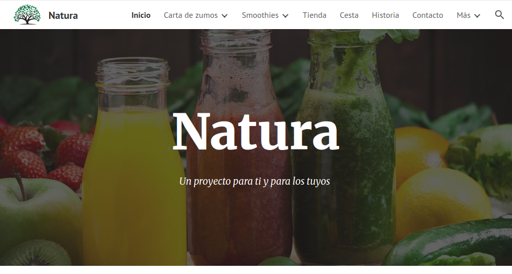

Natura Google Sites
E-Commerce platform specializing in natural juices, healthy recipes, and ready-to-drink products.

About the Project
This project was created with the goal of promoting a healthy lifestyle through natural nutrition. The platform combines an informational blog with an online store specialized in fruit and vegetable juices, offering both homemade recipes and ready-to-drink products.
The main challenge was to create an attractive and functional space that allowed valuable content—such as recipes and nutritional benefits—to be shared, while seamlessly integrating an easy and accessible sales system for users.
Key Features
- Detailed recipes for natural juices made with fresh fruits and vegetables.
- Nutritional information and health benefits included with each recipe.
- Online store for purchasing ready-made juices with no artificial additives.
- Intuitive and responsive design for an optimal user experience.